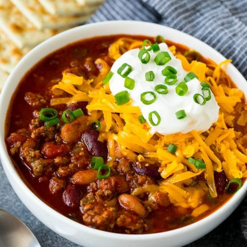

Chili

Ingredients
- 1 pound lean ground beef
- 4 cans crushed tomatoes
- 2 cans red kidney beans (or try making yours from dry beans!)
- 1 onion
- 6 cloves of garlic
- 1 bell pepper
- 3 dried chili peppers
- Chili powder
- Cumin
- worcestershire sauce
- salt
Steps:
- Dice onion, crush garlic, and fry with ground beef
- add tomatoes and beans to pot
- Dice Bell pepper and add to pot
- Once meat is browned, drain fat and add to pot
- Add chili peppers
- Add chili powder, cumin, worcestershire sauce, and salt to taste
- Let stew several hours